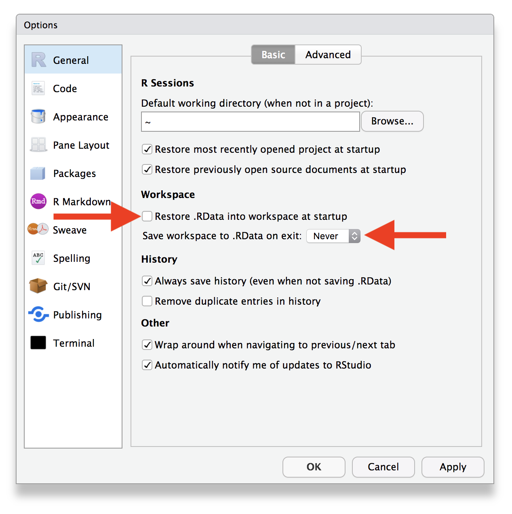

Session 8
September 5, 2018
Review
Working with Strings
Question: You have a vector that contains two strings.
Match the function that was used to the output that it created.
str_detect(txt, "003")str_extract(txt, "\\d+")str_remove(txt, "-sfx")str_c(txt, collapse = " and ")str_replace(txt, "pfx", "prefix")
c("prefix-003-sfx", "prefix-987-sfx")c("003", "987")c("pfx-003", "pfx-987")c(TRUE, FALSE)"pfx-003-sfx and pfx-987-sfx"
Answers
- d; 2. b; 3. c; 4. e; 5. a
Question: The following ICD10 codes describe a selection of ICD codes for “Malignant melanomas of the skin”.
| ICD Code | Description |
|---|---|
| C43 | Malignant melanoma of skin |
| C430 | Malignant melanoma of lip |
| C431 | Malignant melanoma of eyelid, including canthus |
| C4310 | Malignant melanoma of unspecified eyelid, including canthus |
| C4311 | Malignant melanoma of right eyelid, including canthus |
| C4312 | Malignant melanoma of left eyelid, including canthus |
| C432 | Malignant melanoma of ear and external auricular canal |
| C4320 | Malignant melanoma of unsp ear and external auricular canal |
| C4321 | Malignant melanoma of right ear and external auricular canal |
| C4322 | Malignant melanoma of left ear and external auricular canal |
Describe in words all of the patterns you can find in the ICD code and its description.
How can you extract the specific location referred to in the description text?
How could you find all patients with melonoma located on the eyelid? On the ear?
Write a regular expression that finds ICD codes indicate melanoma on the right side of the body.
Outline
Homework and Sharing
- Base R: The other side of R
- Subsetting
- Factors (forcats)
Project Management
- Looking Forward
- Workshop format
- Topics we can talk about
Show and Tell

Who’s ready?

You’re Awesome!

Base R: The Other R
Another way to do things
R is about 25 years old, or 42 if you count its “first version” S.
dplyr, on the other hand, started in October of 2012 but the version most consistent with the things that we’ve learned wasn’t released until October 2014 – or 3.9 years ago.
This means that when you run into issues and search around online in places like StackOverflow, you’ll often run into R code written in base R. It’s also useful to know a bit about base R functions when you need to do more programming-style work, as opposed to the data analysis workflows we’ve been learning.
This section is intended to give a very quick overview of several parts of base R that we haven’t talked about much, primarily to help you translate code you find online into dplyr-based code that you’re used to.
We’ll use the example data frame from Session 3 for this section.
# A tibble: 5 x 5
patient_id age_dx age_visit tumor_size site_code
<dbl> <dbl> <int> <dbl> <chr>
1 5554321 54 54 9.5 C220
2 5554321 54 55 9.5 C400
3 5554321 54 56 9.7 C412
4 5554321 54 57 9.9 C220
5 5554321 54 58 10.1 C400 Selecting Elements of a Vector
First, let’s say that you have a vector.
You can get a particular element of the vector using [ ].
## [1] 14Sidenote: does R start counting elements from 0 or from 1?
You can extract more than one element by using a vector.
## [1] 10 6You can discard elements with negative indices.
## [1] 10 6And you can use TRUE and FALSE to discard elements that are in the same position as the FALSE.
## [1] TRUE FALSE TRUE## [1] 10 6## [1] 10 6Suppose this vector is actually a count of the number of fruit that we have. If the vector has names, we can use the names to select specific elements.
## mango
## 6## kiwi lime
## 10 14Suppose instead of a vector, we have a list.
Yes, it’s a real fruit
Lists are slightly more tricky. Using one set of [ ] gives you back another list with the elements in the brackets, or you can get a specific element with double brackets [[ ]].
## $orange
## [1] 25## $orange
## [1] 25
##
## $plum
## [1] 13## [1] 30The double brackets can only give you one entry; you’ll get an error if you try to get more than one.
## Error in l[[c("orange", "plum")]]: subscript out of boundsDid you notice the $ in the output? That’s because the dollar sign is yet another subsetting operator and it works exactly the same as [[ ]].
## [1] 13## [1] 13Why are there two three ways to subset lists? First: why does there need to be a difference between [ ] and [[ ]]?
## $orange
## [1] 25
##
## $plum
## [1] 13
##
## $quince
## [1] 30
##
## $other
## [1] "rambutan" "starfruit" "tomato"Yup, it really is, too…
## $orange
## [1] 25
##
## $other
## [1] "rambutan" "starfruit" "tomato"## [1] 25## [1] "rambutan" "starfruit" "tomato"## [1] "rambutan" "starfruit" "tomato" "25"Subsetting Columns and Rows
The syntax for data frames (or tibbles) is very similar. The only difference is that the single brackets [ ] take two arguments – rows and columns – and the double brackets [[ ]] (or $) return columns.
## # A tibble: 5 x 5
## patient_id age_dx age_visit tumor_size site_code
## <dbl> <dbl> <int> <dbl> <chr>
## 1 5554321 54 54 9.5 C220
## 2 5554321 54 55 9.5 C400
## 3 5554321 54 56 9.7 C412
## 4 5554321 54 57 9.9 C220
## 5 5554321 54 58 10.1 C400## # A tibble: 1 x 1
## age_dx
## <dbl>
## 1 54## # A tibble: 2 x 2
## age_dx age_visit
## <dbl> <int>
## 1 54 54
## 2 54 57## # A tibble: 2 x 2
## age_dx age_visit
## <dbl> <int>
## 1 54 54
## 2 54 55## [1] 5554321 5554321 5554321 5554321 5554321## [1] 54 54 54 54 54What if you just want to select certain rows or certain columns?
## # A tibble: 2 x 5
## patient_id age_dx age_visit tumor_size site_code
## <dbl> <dbl> <int> <dbl> <chr>
## 1 5554321 54 54 9.5 C220
## 2 5554321 54 57 9.9 C220## # A tibble: 5 x 2
## patient_id age_dx
## <dbl> <dbl>
## 1 5554321 54
## 2 5554321 54
## 3 5554321 54
## 4 5554321 54
## 5 5554321 54What does this code do?
## [1] 9.5 9.7 9.9 10.1In dplyr-speak
## # A tibble: 5 x 2
## age_dx age_visit
## <dbl> <int>
## 1 54 54
## 2 54 55
## 3 54 56
## 4 54 57
## 5 54 58## # A tibble: 2 x 5
## patient_id age_dx age_visit tumor_size site_code
## <dbl> <dbl> <int> <dbl> <chr>
## 1 5554321 54 54 9.5 C220
## 2 5554321 54 57 9.9 C220## # A tibble: 1 x 1
## age_dx
## <dbl>
## 1 54## # A tibble: 4 x 1
## tumor_size
## <dbl>
## 1 9.5
## 2 9.7
## 3 9.9
## 4 10.1## [1] 9.5 9.7 9.9 10.1WTF: What the Factor?
Imagine you have a variable that records months:
Using a string for this variable has two problems:
There are only 12 possible values. What if you make a mistake?
You can’t sort in a useful way.
## [1] "Dec" "May" "Oct" "Sep"
A factor solves both of these problems:
It adds the concept of a categorical level
month_levels <- c( "Jan", "Feb", "Mar", "Apr", "May", "Jun", "Jul", "Aug", "Sep", "Oct", "Nov", "Dec" ) m <- factor(m, levels = month_levels) m## [1] Dec Oct Sep May ## Levels: Jan Feb Mar Apr May Jun Jul Aug Sep Oct Nov Decthat have an explicit order
## [1] May Sep Oct Dec ## Levels: Jan Feb Mar Apr May Jun Jul Aug Sep Oct Nov Dec
If you try to create a factor with a typo, you’ll get a missing value
## [1] <NA> Oct <NA> May
## Levels: Jan Feb Mar Apr May Jun Jul Aug Sep Oct Nov DecPackage Spotlings: forcats
If you end up needing to work with factors, try forcats.

R uses factors to handle categorical variables, variables that have a fixed and known set of possible values. Historically, factors were much easier to work with than character vectors, so many base R functions automatically convert character vectors to factors.
These days, making factors automatically is no longer so helpful, so packages in the tidyverse never create them automatically. However, factors are still useful when you have true categorical data, and when you want to override the ordering of character vectors to improve display. The goal of the forcats package is to provide a suite of useful tools that solve common problems with factors.
To load forcats:
Project Management Tips
Start a new project, start a new RStudio project.
Save “clean” code: have one file that runs your analysis
Write scratch code in console or a script
Save working code into a good script
Restart R and run from the beginning after you lock-in each step
When you’re comfortable, turn off saving
.RDatain RStudio Settings
Looking Forward
Bi-Weekly Workshops
Every other week, starting the week of September 17, 2018. What time works for you?
http://whenisgood.net/gerkelab/cds-r-follow-up
Goals
Collaborative workspace for problem solving
Learn more programming and data processing techniques
Potential Topics
Creating data-driven reports with R Markdown.
Visualizing data with ggplot2
Writing functions for repeatable analysis
Using version control software to track changes
Accessing data stored in databases with dbplyr